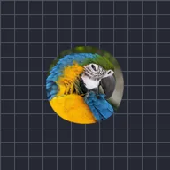

Lisser les bords

Arrondit et lisse les bords des parties opaques du calque sans modifier les couleurs intérieures. Limiter au calque ne permet aux bords de se déplacer que vers l’intérieur.
Réglages
| Réglage | Type | Plage | Par défaut |
|---|---|---|---|
| Intensité | Nombre | De 0 px à 300 px | 12 px |
| Limiter au calque | Activé ou désactivé | – | Désactivé |